Import as Adobe projects guide
MadCat v1.2.0.647, Spectator v1.2.0.759 and Adobe Audition and Premiere 2014 release versions were used in the making of this manual.Introduction
XMLs that have been exported from MadCat or saved from Spectator can be imported as projects into both Adobe's Audition and Premiere software. These XMLs will have the video and audio files you desire synchronised by MadCat/Spectator. Note that this is not meant to be a guide on how to use these programs, just on how to import MadCat and Spectator XMLs into them.See the MadCat and Spectator manuals on how to export and create XMLs ready to import with desired video and audio files. Note that the media files used must not have been renamed, moved or deleted between creating the XML and importing, and Audition and Premiere must have access to the media files.
The following was done with Audition and Premiere 2014 release versions.
Importing into Adobe Audition
Note that Audition is an audio only editor, it will not support an XML that includes video files.-
Open a new session of Audition and select File>Import>File… from the dropdown menu.
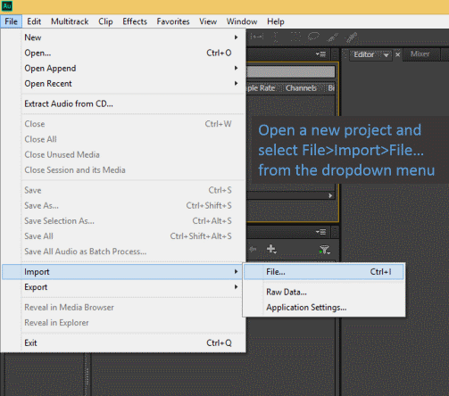 -
Select your MadCat/Spectator created XML and click Open.
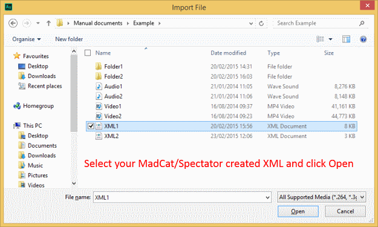Remember that the media files used cannot have been changed, moved or deleted since creation of the XML, and that Audition does not support XMLs that include video files.
-
Each audio file will then be opened in Audition as an individual track and the tracks will all be synchronised according to the time offest found by MadCat/Spectator.
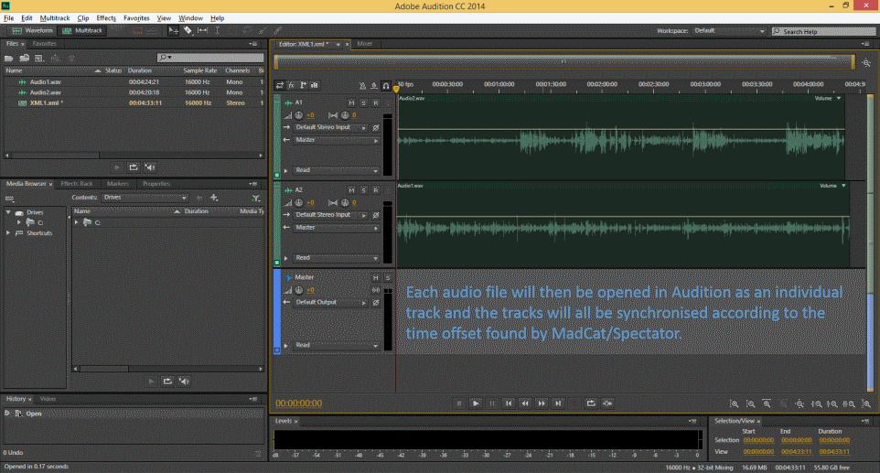If you see no change, you may need to select Window>Workspace>Reset “Default”… to reset all windows within Audition to their default state and try again.
You can then edit the audio tracks at will using Auditions features.
{kind=link}
{kind=link}
{kind=link}
Importing files as individual tracks into Adobe Premiere
-
If exporting the XML from MadCat, ensure that “Edit>Group media files in directory” is disabled (which it is by default).
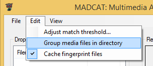This does not affect how MadCat runs comparisons, only the XML it exports and how it is imported by Premiere.
-
Open Premiere and create a New Project.
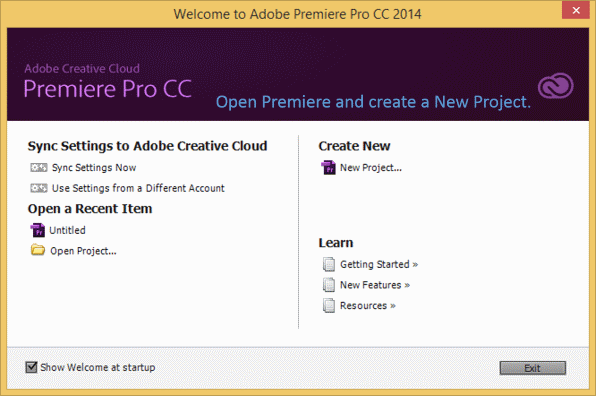 -
Select File>Import… from dropdown menu.
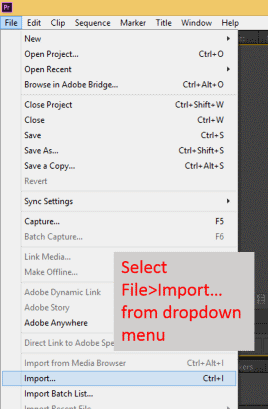 -
Select your MadCat/Spectator created XML and click Open.
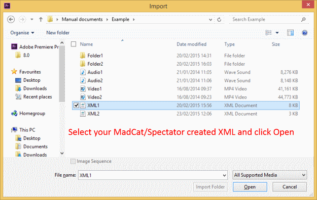Remeber that the media files used cannot have been changed, moved or deleted since creation of the XML.
-
Once all files are loaded, double click the XML (with a blue thumbnail icon) within the Project window.
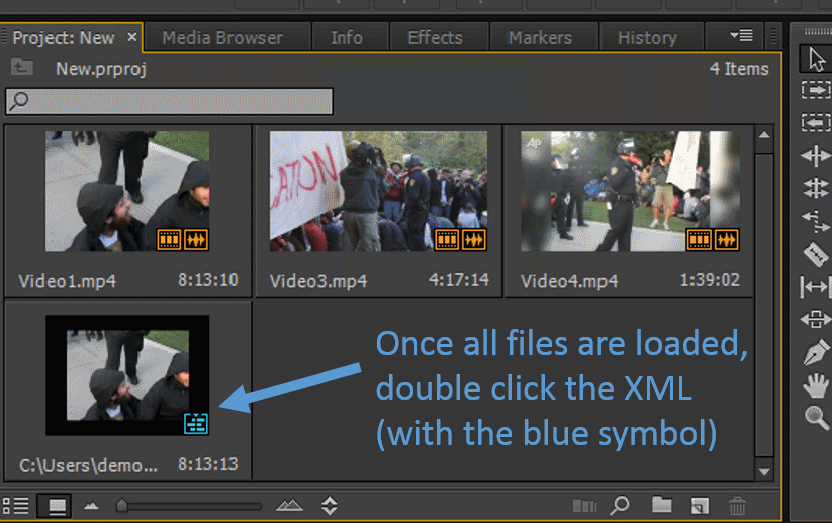If you cannot see these files, you may need to select “Window>Workspace>Reset Current Workspace…” from the dropdown menu. By default the XML will be the last item of the Project files window, which is on the lower left.
-
Your media files will then load into tracks and will be synchronised according to MadCat/Spectator found time offests.
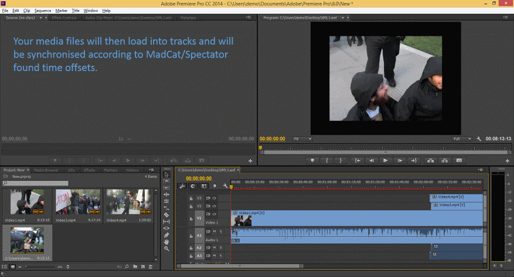You can then edit the project at will using Premiere's features.
{kind=link}
{kind=link}
{kind=link}
{kind=link}
{kind=link}
{kind=link}
Importing files into Grouped Tracks into Adobe Premiere
-
In MadCat, ensure that “Edit>Group media files in directory” is enabled (it is disabled by default).
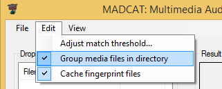This does not affect how MadCat runs comparisons, only the XML it exports and how it is imported by Premiere.
-
Ensure that videos you want to be grouped onto the same track in Prermiere are contained within the same folder, and then drag the folders into MadCat.
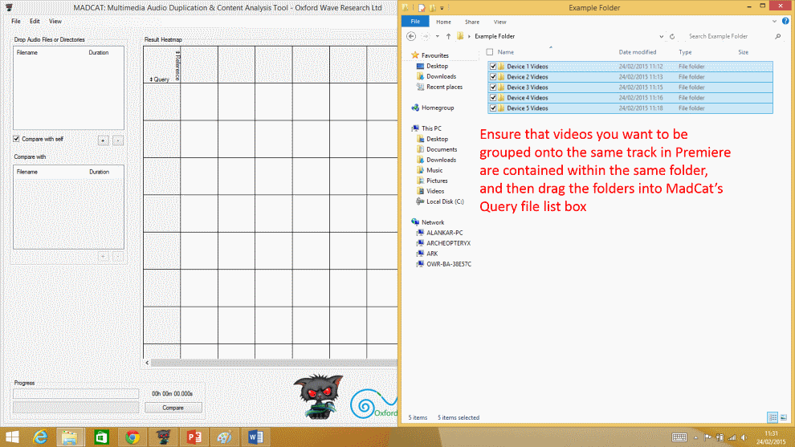Each folder will become its own track when imported into Premiere. Note therefore that if you want a video to have an individual track, it must be placed within its own folder. Audio and video files will not group together, regardless of file structure.
-
Compare and export an XML with the desired files from MadCat as usual.
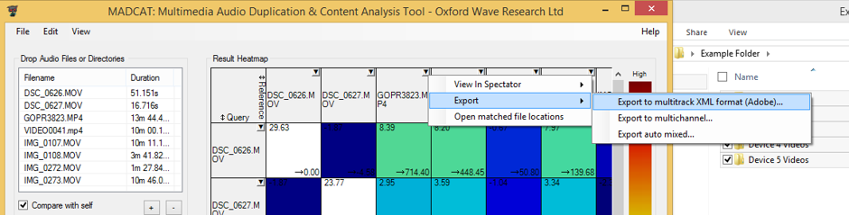See the MadCat manual for more details on how to do this.
-
Import the XML into Adobe Premiere as usual.
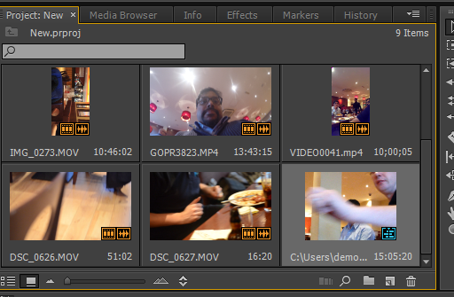As according to steps 2 onwards above in “Importing Individual tracks into Adobe Premiere”.
-
Videos within the same folder will then occupy the same track.
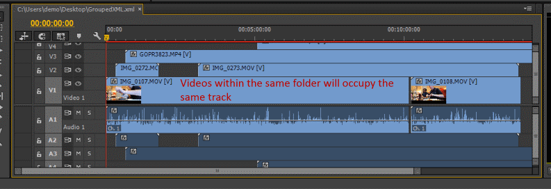If videos with the same track overlap, the earlier one will be cut to end when the later one begins (though the entire file will be loaded can so this can be manually changed by stretching the files in the track view in Premiere).
{kind=link}
{kind=link}
{kind=link}
{kind=link}
{kind=link}